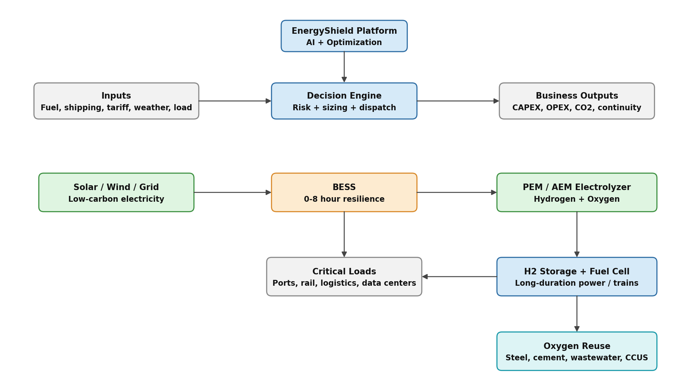
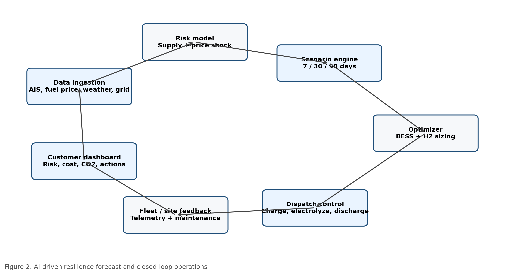

EnergyShield
Product Design Report for Energy Resilience During a Strait of Hormuz Disruption
Green Hydrogen + BESS + AI-Driven Forecasting Platform
ENERGYSHIELD
Product Design Report for Energy Resilience During a Strait of Hormuz Disruption
Green Hydrogen + BESS + AI-Driven Forecasting Platform
| Prepared for | Product design / prototype challenge |
|---|---|
| Prepared by | Neelanjana Pal |
| Date | 16 August 2026 |
| Scope | Business continuity, alternate energy systems, decarbonisation, environmental impact, go-to-market and AI forecasting |
| Recommended concept | EnergyShield: an AI-based energy resilience platform combining BESS for short-duration reliability and green hydrogen for long-duration clean fuel security |
| Design Thesis Businesses exposed to a sustained Strait of Hormuz disruption need more than alternate shipping routes. They need alternate energy systems. EnergyShield uses AI to quantify exposure, select an optimal mix of BESS and green hydrogen, and operate the system to reduce fossil-fuel dependency, cost volatility and environmental risk. |
|---|
Contents
1. Executive Summary
This report proposes EnergyShield, a product design and prototype concept for businesses that need to maintain energy supply and delivery during a sustained unavailability of the Strait of Hormuz. The concept is designed around an integrated resilience system, not a single technology purchase: BESS responds to immediate power reliability needs, while green hydrogen supports long-duration fuel substitution for mobility, industrial loads and backup generation.
The Strait of Hormuz is a major global energy chokepoint. The U.S. Energy Information Administration reported that oil flows through the strait averaged around 20 million barrels per day in 2024, equal to about 20% of global petroleum liquids consumption, with limited alternative options if the route is closed [S1]. The EIA also reported that the global chokepoint system is strategically important because disruption can create supply delays, raise shipping costs and increase global energy prices [S2].
BESS is recommended for short-duration resilience, fast response, peak shaving, grid support and immediate reduction in diesel generator usage.
Green hydrogen is recommended for long-duration storage, non-electrified rail, port equipment, heavy transport, industrial backup power and strategic fuel security.
AI forecasting is recommended as the intelligence layer that converts external disruption signals, energy prices and site-level load profiles into actionable operating decisions.
Oxygen generated by electrolysis should be treated as a monetizable co-product for steel, cement, wastewater treatment and carbon-capture use cases rather than simply vented.
| Recommendation in One Line Position the idea as a hybrid energy resilience platform: BESS for near-term reliability and green hydrogen for long-duration decarbonised fuel security, governed by an AI decision engine. |
|---|
2. Purpose of the Report
Define a product concept that helps businesses navigate a sustained Strait of Hormuz disruption.
Compare key alternative energy options using technical, commercial, operational and environmental criteria.
Show how green hydrogen and BESS can reduce fossil-fuel dependency in the short term and long term.
Integrate decarbonisation advantages, including lower greenhouse gas emissions and reduced soil and marine contamination risks associated with fossil-fuel logistics.
Propose a customer-facing AI forecast and optimisation solution that supports business continuity, asset planning and energy dispatch.
Provide a pointwise response that directly maps to product, system architecture, workflows, go-to-market and technology/AI expectations.
3. Problem Framing: Why the Strait of Hormuz Matters
A prolonged constraint on the Strait of Hormuz would affect businesses through fuel availability, price volatility, shipping insurance premiums, inventory shortages and pressure on power reliability. The issue is therefore not only a shipping problem — it is an enterprise energy resilience problem.
| Risk Area | Business Impact | Energy Resilience Need | Relevant Source |
|---|---|---|---|
| Fuel supply interruption | Diesel, fuel oil, LNG and petrochemical input shortages. | Local storage and alternate generation. | EIA Hormuz chokepoint data [S1][S2] |
| Price volatility | Higher operating cost and uncertain freight rates. | Scenario planning and hedging triggers. | EIA disruption-price relationship [S2] |
| Operational continuity | Risk to ports, rail, cold-chain logistics and data centers. | BESS, microgrids, hydrogen fuel cells. | IEA BESS system role [S3][S4] |
| Environmental exposure | More tanker rerouting can increase spill, emissions and coastal exposure. | Reduce petroleum movement and diesel burn. | UNEP and ITOPF pollution impact [S6][S7] |
4. Consideration Criteria for Alternative Solutions
The challenge should not be assessed only on technology appeal. The strongest product response ranks alternatives against business continuity, commercial viability, environmental impact and implementation speed.
| Criteria | Question to Answer | Short-Term | Long-Term | Why It Matters |
|---|---|---|---|---|
| Deployment speed | Can the solution support the business within weeks or months? | Very High | Medium | Immediate disruption response requires fast deployable assets. |
| Duration of backup | Does the solution support hours, days or weeks? | High | Very High | BESS fits hours; hydrogen fits multi-day or strategic fuel needs. |
| Fossil-fuel reduction | How much diesel, fuel oil or gas can be displaced? | Medium | Very High | Directly contributes to import-risk reduction and decarbonisation. |
| CAPEX and financing | Can the customer finance or consume it as a service? | High | High | Energy-as-a-Service reduces adoption friction. |
| Lifecycle emissions | Does the solution reduce emissions across production and use? | High | Very High | Green hydrogen only delivers deep benefits when powered by low-carbon electricity. |
| Environmental externalities | Does it reduce marine spill risk, soil contamination and local pollutants? | Medium | High | Reduced fossil-fuel storage and transport lowers contamination exposure. |
| Operational integration | Does it integrate with existing electrical and fuel systems? | High | High | Retrofit practicality is critical for ports, rail and industrial customers. |
| AI readiness | Can it use data to forecast risk and optimize dispatch? | Medium | Very High | Decisions improve as external and site-level data become integrated. |
5. Recommended Product Concept: EnergyShield
EnergyShield is an AI-powered product that helps businesses assess exposure to energy disruption, design alternate energy systems and operate those systems during normal and crisis conditions. The platform combines a digital dashboard, optimisation engine, equipment sizing tool, marketplace for solution partners and operational dispatch layer.
5.1 Target Customers
Railways and metro operators using diesel on non-electrified routes or requiring depot-level resilience.
Port authorities, container terminals and logistics parks exposed to fuel price shocks and vessel delays.
Industrial parks, steel plants, cement plants and refineries with continuous energy and heat demand.
Data centers, hospitals, airports and telecom infrastructure requiring high reliability backup power.
Government energy security and disaster resilience functions that need scenario visibility across critical infrastructure.
5.2 User Experience and Screens
| Screen / Module | User Question | Key Output | Decision Supported |
|---|---|---|---|
| Energy Risk Dashboard | How exposed is my site to fuel disruption? | Risk score, days of fuel left, cost-at-risk, CO2 baseline. | Activate mitigation plan. |
| Alternative Recommendation Engine | Should I use BESS, hydrogen or hybrid? | Ranked options with technical and commercial sizing. | Select solution architecture. |
| Scenario Simulator | What happens under 7, 30 or 90 days of disruption? | Fuel shortage curve, price sensitivity and resilience duration. | Plan inventory and investments. |
| Business Case Builder | What is the payback and carbon impact? | CAPEX, OPEX, avoided diesel, emissions reduction. | Approve project funding. |
| Oxygen Reuse Marketplace | Can electrolysis oxygen create value? | Nearby industrial buyers and offtake estimates. | Improve unit economics. |
| AI Dispatch Console | When should I charge, discharge or make hydrogen? | Optimized action list for BESS, electrolyzer, fuel cell and grid. | Operate during crisis and normal mode. |
6. Systems and Architecture
The proposed system uses BESS and green hydrogen as complementary layers. BESS provides high-efficiency, rapid response power for short-duration backup and renewable smoothing. Green hydrogen provides a stored clean fuel pathway for long-duration backup, transport and industrial applications. The International Energy Agency highlights that battery storage is increasingly used as a multi-tool for power systems and renewables integration, and reports rapid growth in utility-scale battery deployments [S3][S4].

Figure 1: Proposed hybrid energy resilience architecture. Author-created, based on the product concept and cited energy system references.
6.1 Core Architecture Components
| Component | Function | Why It Is Needed | Key Data / Interface |
|---|---|---|---|
| Data layer | Collects fuel prices, shipping signals, renewable forecasts, tariffs and site load data. | Creates a current view of risk and options. | APIs, IoT meters, ERP, AIS, weather, grid tariff feeds. |
| Risk engine | Scores geopolitical, supply, inventory and cost exposure. | Translates external disruption into business impact. | Probability, severity, time-to-impact. |
| Optimisation engine | Sizes and dispatches BESS, electrolyzer, hydrogen storage and fuel cells. | Balances cost, reliability, emissions and resilience duration. | Mixed-integer optimisation / AI-assisted heuristics. |
| Asset layer | Physical energy assets such as BESS, solar, electrolyzer, tanks, fuel cell and EMS. | Executes the selected resilience plan. | SCADA, BMS, electrolyzer control, hydrogen safety system. |
| Customer dashboard | Provides executive and site-operator views. | Makes the solution usable for both business and operations teams. | Risk score, action queue, savings, CO2, uptime. |
| Marketplace / partner layer | Connects customers with OEMs, EPCs, oxygen buyers and financiers. | Converts recommendations into deployable projects. | Commercial offers, service-level agreements, offtake contracts. |
7. Workflows and Processes
Workflow A: Risk Assessment
Customer uploads site list, fuel consumption, load profile and criticality data.
Platform enriches the data with fuel-price, route-risk, weather and grid inputs.
AI generates site risk score and business exposure heat map.
Management receives recommended actions ranked by urgency.
Workflow B: Solution Design
Customer selects resilience target, such as 8 hours, 24 hours or 7 days.
Platform evaluates BESS-only, hydrogen-only, hybrid and conventional alternatives.
Sizing output includes BESS MWh, electrolyzer MW, hydrogen storage kg and fuel cell MW.
Business case is generated with CAPEX, OPEX, payback, emissions and risk reduction.
Workflow C: Crisis Operations
Disruption alert triggers emergency operating mode.
BESS supports fast response and peak-shaving.
Electrolyzer operation is shifted to low-cost renewable or off-peak windows.
Hydrogen storage and fuel cells support long-duration backup or transport fuel demand.
Dashboard reports continuity, fuel saved, carbon avoided and remaining autonomy.
8. Alternative Comparison
The strongest answer to the challenge is not to claim that one alternative solves every use case. Instead, EnergyShield recommends technologies based on duration, load type, customer readiness and environmental objectives.
| Alternative | Best Use Case | Strength | Critical Limitation | Short-Term | Long-Term |
|---|---|---|---|---|---|
| Diesel inventory / DG backup | Emergency bridge for existing facilities. | Fast and familiar. | Continues emissions, fuel import exposure, spill and soil contamination risks. | High | Low |
| BESS | 0-8 hour backup, renewable shifting, grid services, peak shaving. | Fast response, modular, high efficiency, proven commercial scale. | Limited economics for multi-day backup unless oversized. | Very High | High |
| Green hydrogen | Multi-day backup, trains, heavy transport, industrial fuel substitution. | Decarbonised fuel pathway when powered by renewables. | Higher CAPEX, lower round-trip efficiency than batteries, infrastructure complexity. | Medium | Very High |
| Solar / wind PPA | Reduce grid and fossil-fuel dependence. | Low-carbon supply and cost hedge. | Intermittency requires storage or flexible load. | High | Very High |
| Grid import diversification | Maintain business with alternate electrical supply. | Low operational complexity. | Only works if grid capacity and reliability are sufficient. | Medium | Medium |
| Pipeline / shipping rerouting | Maintain petroleum logistics where alternatives exist. | Can reduce direct chokepoint reliance. | Limited capacity; does not reduce fossil-fuel dependency. | Medium | Medium |
| Decision Rule Use BESS when the resilience problem is measured in minutes to hours. Use green hydrogen when the resilience problem is measured in days, involves heavy mobility, or requires a clean fuel molecule. Use hybrid architecture when both fast response and long-duration security are needed. |
|---|
9. Short-Term and Long-Term Impact on Fossil-Fuel Reduction
| Time Horizon | Action | Fossil-Fuel Reduction Impact | Business Outcome |
|---|---|---|---|
| 0-6 months | Deploy EnergyShield dashboard, risk scoring, emergency response workflows and BESS pilots at high-criticality sites. | Reduces diesel generator runtime through peak shaving and short-duration backup. | Improved visibility, reduced outage risk and lower fuel burn. |
| 6-18 months | Scale BESS with solar PPAs; implement hybrid microgrid controls and customer success workflows. | Reduces routine diesel consumption and grid peak demand supported by fossil-heavy generation. | Lower energy cost volatility and improved renewable utilization. |
| 18-36 months | Pilot green hydrogen production and fuel-cell backup for one or more strategic nodes. | Displaces diesel in long-duration backup and selected transport/refueling use cases. | Creates operational proof for clean fuel resilience. |
| 3-7 years | Build hydrogen hubs near renewable resources, rail depots, ports or industrial clusters. | Material reduction in diesel, fuel oil and imported gas exposure for targeted sectors. | Strategic energy security, lower carbon intensity and new oxygen co-product revenue. |
| 7+ years | Integrate green hydrogen with industrial offtake, public transport and carbon-capture ecosystems. | Supports structural decarbonisation and reduced petroleum logistics dependence. | Resilient low-carbon industrial ecosystem. |
10. Environmental Impact and Decarbonisation Advantages
The environmental case should be broader than CO2 alone. A strong marketing and policy narrative should also include reduced exposure to soil contamination, marine pollution, local air pollutants and hazardous fossil-fuel logistics. UNEP identifies marine pollution from land and sea, including oil spills, as a major threat to ocean health, biodiversity, livelihoods and coastal communities [S6]. ITOPF notes that ship-source oil spills can seriously affect marine environments through physical smothering and toxic effects [S7].
10.1 Decarbonisation Advantages
Lower operational carbon emissions when diesel generation is replaced by BESS charged from renewable or low-carbon grid electricity.
Lower lifecycle emissions when hydrogen is produced by electrolysis using renewable electricity rather than fossil-derived hydrogen.
Support for hard-to-electrify use cases such as long-distance rail, heavy trucking, port equipment and industrial backup power.
Alignment with IPCC mitigation pathways that require substantial fossil-fuel reduction, electrification, efficiency improvement and alternative fuels such as hydrogen [S5].
10.2 Soil and Sea Contamination Benefits
| Pollution Pathway | Conventional Fossil-Fuel Exposure | EnergyShield Mitigation | Marketing / Policy Message |
|---|---|---|---|
| Marine oil spills | Tanker accidents, ship-source spills and offshore logistics can affect marine flora, fauna and coastal livelihoods. | Reduce petroleum dependence through local renewable energy, BESS and hydrogen where feasible. | Less reliance on vulnerable oil logistics supports cleaner oceans and resilient coastal economies. |
| Soil contamination | Diesel storage tanks, refueling yards and fuel transfer points can leak into soil and groundwater. | Reduce onsite diesel inventory and generator runtime; monitor residual fuel assets digitally. | Cleaner industrial campuses and reduced legacy contamination risk. |
| Local air pollution | Diesel combustion produces NOx, particulates and other pollutants near people and workplaces. | Use electric storage and fuel cells for backup or transport where practical. | Cleaner ports, depots and logistics hubs. |
| Oxygen by-product | No equivalent value stream in conventional fossil backup. | Electrolysis co-produces oxygen that can support steel, cement, wastewater and carbon-capture applications. | Create circular industrial value from clean hydrogen projects. |
| Carbon capture enablement | Combustion in air dilutes CO2 with nitrogen, raising capture complexity. | Oxygen can support oxy-fuel applications where technically and economically viable. | Oxygen reuse can support deeper industrial decarbonisation. |
10.3 Environmental Caveats
Green hydrogen is only deeply decarbonised when the electricity source is renewable or low-carbon. Grid-powered electrolysis in carbon-intensive grids can weaken the climate case.
BESS requires battery lifecycle management, including responsible sourcing, fire safety, recycling and end-of-life disposal.
Hydrogen systems require safety design for leak detection, ventilation, ignition control, pressure management and emergency response.
Oxygen release is environmentally harmless but does not solve decarbonisation by itself. The climate benefit comes from replacing fossil fuels and monetising oxygen in productive industrial uses.
11. Marketing and Commercial Policy
The marketing policy should position EnergyShield as a resilience and decarbonisation solution, not only as a sustainability product. This is important because customers facing energy disruption buy continuity, cost control and risk reduction before buying carbon reduction.
| Market Segment | Primary Pain Point | Positioning Message | Commercial Model |
|---|---|---|---|
| Rail and transport | Diesel exposure on non-electrified routes and depot reliability. | Clean fuel security for non-electrified mobility corridors. | Energy-as-a-Service; H2 supply contract; BESS lease. |
| Ports and logistics | Fuel price shock, cold-chain reliability and equipment uptime. | Keep cargo moving during fuel disruption with clean microgrids. | SaaS + BESS project + operational SLA. |
| Industrial parks | Continuous operations and carbon targets. | Local energy resilience hub with oxygen co-product monetisation. | Hybrid project development + oxygen offtake marketplace. |
| Data centers and critical facilities | Backup power reliability and diesel replacement pressure. | Low-carbon backup roadmap with BESS first and hydrogen for extended duration. | Subscription + capacity payment + managed service. |
| Government / public sector | Critical infrastructure resilience and climate policy. | National energy resilience intelligence layer. | Enterprise license + implementation consulting. |
11.1 Product Packaging
Starter: Risk dashboard, site scoring, scenario simulator and executive reports.
Professional: Includes energy sizing, business case builder, carbon accounting and BESS dispatch recommendations.
Enterprise: Adds real-time asset telemetry, AI forecast engine, automated dispatch, oxygen marketplace and customer success reporting.
Energy-as-a-Service: Customer pays per kWh, per kg H2 or availability-based SLA while the provider or partner owns and operates assets.
12. AI-Driven Forecast Solution
The AI layer is the differentiator. It should forecast the likelihood and business impact of energy disruption, then advise what to buy, where to deploy it and how to operate it. The AI should not merely provide a chatbot interface; it should connect market intelligence, physical assets and financial decision-making.

Figure 2: AI-driven resilience forecast and closed-loop operations. Author-created AI workflow based on proposed product functions.
| AI Capability | Input Data | Output | Business Value |
|---|---|---|---|
| Supply disruption forecast | Shipping route status, news signals, fuel price movements, AIS, insurance and port data. | Probability-weighted disruption score. | Earlier response and inventory planning. |
| Fuel price stress testing | Historical fuel prices, futures, inventory data and demand signals. | Price-at-risk and operating cost-at-risk. | Better procurement and hedging decisions. |
| Energy mix optimisation | Site load, tariff, renewable profile, backup duration target, equipment cost. | Recommended package: BESS, hydrogen, solar, grid and residual diesel. | Lowest-cost resilience planning. |
| Predictive maintenance | Battery BMS, electrolyzer stack voltage, compressor, fuel cell and inverter telemetry. | Anomaly alerts and remaining useful life estimate. | Higher uptime and lower maintenance cost. |
| Autonomous dispatch | Weather forecast, price forecast, tank levels, battery SOC, grid status. | Charge/discharge/electrolyze/fuel-cell dispatch commands. | Operational savings and carbon reduction. |
| ESG and policy reporting | Energy output, diesel displaced, hydrogen produced, emissions factors, oxygen sold. | Audit-ready carbon and resilience reports. | Supports marketing, compliance and financing. |
12.1 Example AI Output
| Sample Recommendation High-risk site: Rail depot A. Current diesel exposure: High. Recommended action: Deploy 4-hour BESS immediately, secure solar PPA within 6 months, pilot 2 MW PEM electrolyzer and 500 kg hydrogen storage for long-duration backup and train refueling. Oxygen offtake opportunity: nearby wastewater treatment facility and industrial users. |
|---|
13. Implementation Roadmap
| Phase | Timeline | Product Deliverable | Physical Energy Deliverable | Success Metric |
|---|---|---|---|---|
| Phase 1: Discovery | 0-8 weeks | Risk dashboard prototype and customer interviews. | No hardware; data collection only. | Risk scores generated for priority sites. |
| Phase 2: Pilot | 2-6 months | Scenario simulator and BESS sizing engine. | BESS pilot at one critical site. | Diesel runtime reduction and backup autonomy validated. |
| Phase 3: Hybrid proof | 6-18 months | AI optimisation, dispatch console and business case builder. | Solar+BESS microgrid and hydrogen feasibility package. | Energy cost and emissions reduction demonstrated. |
| Phase 4: Hydrogen deployment | 18-36 months | Hydrogen asset module and oxygen marketplace. | Electrolyzer, hydrogen storage, fuel cell or train refueling pilot. | Long-duration backup and oxygen offtake validated. |
| Phase 5: Scale | 3-7 years | Enterprise platform and partner marketplace. | Multi-site BESS and hydrogen hubs. | Portfolio-level fossil-fuel reduction and resilience confirmed. |
14. Key Risks and Mitigation
| Risk | Implication | Mitigation | Owner |
|---|---|---|---|
| Hydrogen cost remains high | Weak business case versus grid/BESS/diesel. | Use hydrogen only where long-duration or mobility value is clear; aggregate demand through hubs. | Product + commercial team |
| Renewable power unavailable at scale | Green hydrogen loses emissions advantage. | Prioritise renewable PPAs and energy attribute certificates; measure lifecycle emissions transparently. | Energy procurement |
| Battery safety and end-of-life | Fire, permitting and sustainability concerns. | Use certified systems, fire suppression, monitoring and recycling contracts. | EPC + operations |
| Hydrogen safety | Leak, pressure and ignition hazards. | Design for detection, ventilation, isolation, training and emergency response. | Safety engineering |
| Data quality and AI trust | Poor recommendations or low adoption. | Human-in-the-loop approval, model governance, source transparency and audit trails. | AI/product team |
| Oxygen monetisation uncertainty | Lower-than-expected co-product revenue. | Validate nearby offtake early; do not make oxygen revenue the primary business case. | Commercial team |
15. Pointwise Response to the Challenge
| Challenge Area | Suggested Response | Prototype Element |
|---|---|---|
| Product | Build EnergyShield for businesses exposed to fuel disruption. It solves energy continuity, cost volatility and decarbonisation planning. | Risk dashboard, recommendation engine, business case simulator. |
| Systems & Architecture | Use renewable power, BESS, electrolyzers, hydrogen storage, fuel cells and oxygen reuse, controlled by an AI energy management layer. | Hybrid architecture diagram and asset module. |
| Workflows & Processes | Assess risk, design alternatives, approve business case, deploy assets and operate in normal or emergency mode. | User flow: assessment -> sizing -> approval -> dispatch. |
| Go-to-Market | Target rail, ports, logistics, industrial parks, data centers and public infrastructure. Sell SaaS first, then projects and Energy-as-a-Service. | Pricing tiers and segment-specific value proposition. |
| Technology & AI | Use AI for disruption forecasting, price stress testing, optimization, predictive maintenance and autonomous dispatch. | AI forecast loop and scenario simulator. |
| Environmental Policy | Market the solution around reduced fossil-fuel use, lower greenhouse gas emissions, reduced soil and sea contamination risk and oxygen co-product reuse. | ESG dashboard and oxygen marketplace. |
16. Conclusion
Green hydrogen and BESS are a strong proposal if framed as complementary resilience layers. BESS is the practical short-term response because it is commercially mature, fast to deploy and suited to short-duration backup and renewable integration. Green hydrogen is the strategic long-term response because it supports clean fuel substitution, long-duration backup and hard-to-electrify transport and industrial uses.
The most compelling product is therefore not simply a hydrogen project or a battery project. The winning design is an AI-driven energy resilience platform that tells businesses where they are exposed, which alternative to deploy, how to finance it, how to operate it and how to communicate the environmental advantage. This approach addresses product design, systems architecture, workflows, go-to-market, AI and decarbonisation in a single coherent solution.
17. Sources and Reference Notes
| Ref. | Source |
|---|---|
| S1 | U.S. Energy Information Administration, "Amid regional conflict, the Strait of Hormuz remains critical oil chokepoint," 16 June 2025. eia.gov/todayinenergy/detail.php?id=65504 |
| S2 | U.S. Energy Information Administration, "World Oil Transit Chokepoints," updated 3 March 2026. eia.gov/international/analysis/special-topics/World_Oil_Transit_Chokepoints |
| S3 | International Energy Agency, "Technology: Battery storage - Global Energy Review 2026." iea.org/reports/global-energy-review-2026/technology-battery-storage |
| S4 | International Energy Agency, "Battery storage is scaling up and taking on a larger system role," 29 May 2026. iea.org/commentaries/battery-storage-is-scaling-up-and-taking-on-a-larger-system-role |
| S5 | IPCC / UNFCCC, "The evidence is clear: the time for action is now. We can halve emissions by 2030," 4 April 2022. ipcc.ch/2022/04/04/ipcc-ar6-wgiii-pressrelease |
| S6 | UN Environment Programme, "Marine and Land-based Pollution." unep.org/topics/ocean-seas-and-coasts/regional-seas-programme/marine-and-land-based-pollution |
| S7 | ITOPF, "TIP 13: Effects of oil pollution on the marine environment," 19 May 2014. itopf.org/knowledge-resources/documents-guides/tip-13-effects-of-oil-pollution-on-the-marine-environment |
| S8 | World Bank, "Electrolyzers for Hydrogen Production - Technical and Economic Characteristics," March 2026. worldbank.org/en/topic/energy/publication/electrolyzers-for-hydrogen-production-technical-and-economic-characteristics |